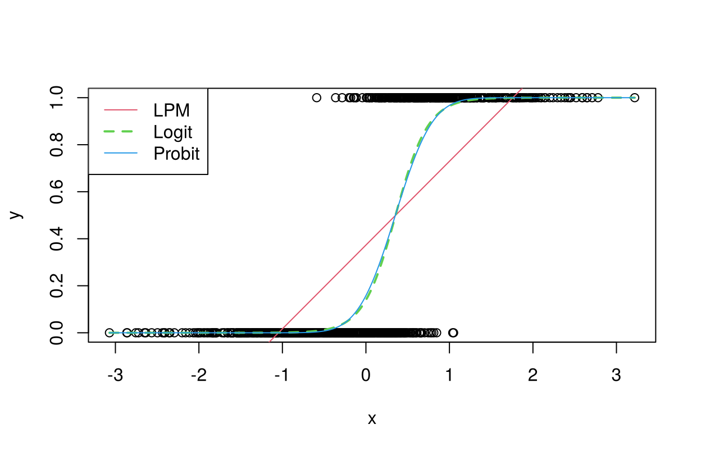

data(mroz, package = "wooldridge")
library(car); library(lmtest)1 Binary Response Models
The outcome \(y\) takes the values 0 and 1, and we model the response probability \[ P(y = 1 \mid x) = G(x\beta). \] The three standard choices for \(G\) are
- Linear probability model (LPM): \(G(z) = z\). Estimated by OLS.
- Logit: \(G(z) = \Lambda(z) = \exp(z)/(1+\exp(z))\), the logistic CDF.
- Probit: \(G(z) = \Phi(z)\), the standard normal CDF.
Logit and probit are estimated by maximum likelihood. Their fitted probabilities always lie between 0 and 1; the LPM’s need not.
1.1 Example: Labor force participation of married women
The data set mroz contains 753 married women. The outcome inlf equals 1 if the woman was in the labor force in 1975. Regressors are other household income (nwifeinc, in $1000), years of education, experience and its square, age, and the number of children younger than 6 and between 6 and 18.
1.1.1 Linear probability model
In the LPM the error is heteroskedastic by construction, since \(\text{Var}(y \mid x) = x\beta(1-x\beta)\). We therefore use heteroskedasticity-robust standard errors (vcov = hccm).
linprob <- lm(inlf ~ nwifeinc + educ + exper + I(exper^2) + age + kidslt6 + kidsge6,
data = mroz)
coeftest(linprob, vcov = hccm)#>
#> t test of coefficients:
#>
#> Estimate Std. Error t value Pr(>|t|)
#> (Intercept) 0.58551922 0.15358032 3.8125 0.000149 ***
#> nwifeinc -0.00340517 0.00155826 -2.1852 0.029182 *
#> educ 0.03799530 0.00733982 5.1766 2.909e-07 ***
#> exper 0.03949239 0.00598359 6.6001 7.800e-11 ***
#> I(exper^2) -0.00059631 0.00019895 -2.9973 0.002814 **
#> age -0.01609081 0.00241459 -6.6640 5.183e-11 ***
#> kidslt6 -0.26181047 0.03215160 -8.1430 1.621e-15 ***
#> kidsge6 0.01301223 0.01366031 0.9526 0.341123
#> ---
#> Signif. codes: 0 '***' 0.001 '**' 0.01 '*' 0.05 '.' 0.1 ' ' 1Each coefficient is the change in the participation probability for a one-unit change in the regressor. For example, one more young child lowers the probability by about 26 percentage points, holding the other variables fixed.
1.1.2 Logit
logitres <- glm(inlf ~ nwifeinc + educ + exper + I(exper^2) + age + kidslt6 + kidsge6,
family = binomial(link = logit), data = mroz)
summary(logitres)#>
#> Call:
#> glm(formula = inlf ~ nwifeinc + educ + exper + I(exper^2) + age +
#> kidslt6 + kidsge6, family = binomial(link = logit), data = mroz)
#>
#> Coefficients:
#> Estimate Std. Error z value Pr(>|z|)
#> (Intercept) 0.425452 0.860365 0.495 0.62095
#> nwifeinc -0.021345 0.008421 -2.535 0.01126 *
#> educ 0.221170 0.043439 5.091 3.55e-07 ***
#> exper 0.205870 0.032057 6.422 1.34e-10 ***
#> I(exper^2) -0.003154 0.001016 -3.104 0.00191 **
#> age -0.088024 0.014573 -6.040 1.54e-09 ***
#> kidslt6 -1.443354 0.203583 -7.090 1.34e-12 ***
#> kidsge6 0.060112 0.074789 0.804 0.42154
#> ---
#> Signif. codes: 0 '***' 0.001 '**' 0.01 '*' 0.05 '.' 0.1 ' ' 1
#>
#> (Dispersion parameter for binomial family taken to be 1)
#>
#> Null deviance: 1029.75 on 752 degrees of freedom
#> Residual deviance: 803.53 on 745 degrees of freedom
#> AIC: 819.53
#>
#> Number of Fisher Scoring iterations: 4logLik(logitres)#> 'log Lik.' -401.7652 (df=8)The logit coefficients are not partial effects on the probability; only their signs and relative sizes can be read directly. A common transformation is the odds ratio \(\exp(\beta_j)\): the factor by which the odds \(P/(1-P)\) change when \(x_j\) increases by one unit.
exp(coef(logitres))#> (Intercept) nwifeinc educ exper I(exper^2) age
#> 1.5302825 0.9788810 1.2475360 1.2285929 0.9968509 0.9157386
#> kidslt6 kidsge6
#> 0.2361344 1.0619557Pseudo \(R^2\). McFadden’s measure is \(1 - \ell_{ur}/\ell_0\), where \(\ell_0\) is the log likelihood of a model with only an intercept. For binary outcomes it equals one minus the ratio of the residual to the null deviance. DescTools reports several other versions.
1 - logitres$deviance / logitres$null.deviance#> [1] 0.2196814library(DescTools)
PseudoR2(logitres, which = "all")#> McFadden McFaddenAdj CoxSnell Nagelkerke AldrichNelson
#> 0.2196814 0.2041436 0.2594927 0.3481893 0.2310176
#> VeallZimmermann Efron McKelveyZavoina Tjur AIC
#> 0.3999487 0.2682411 0.3645020 0.2701512 819.5303023
#> BIC logLik logLik0 G2
#> 856.5228241 -401.7651511 -514.8732046 226.21610691.1.3 Probit
probitres <- glm(inlf ~ nwifeinc + educ + exper + I(exper^2) + age + kidslt6 + kidsge6,
family = binomial(link = probit), data = mroz)
summary(probitres)#>
#> Call:
#> glm(formula = inlf ~ nwifeinc + educ + exper + I(exper^2) + age +
#> kidslt6 + kidsge6, family = binomial(link = probit), data = mroz)
#>
#> Coefficients:
#> Estimate Std. Error z value Pr(>|z|)
#> (Intercept) 0.2700736 0.5080782 0.532 0.59503
#> nwifeinc -0.0120236 0.0049392 -2.434 0.01492 *
#> educ 0.1309040 0.0253987 5.154 2.55e-07 ***
#> exper 0.1233472 0.0187587 6.575 4.85e-11 ***
#> I(exper^2) -0.0018871 0.0005999 -3.145 0.00166 **
#> age -0.0528524 0.0084624 -6.246 4.22e-10 ***
#> kidslt6 -0.8683247 0.1183773 -7.335 2.21e-13 ***
#> kidsge6 0.0360056 0.0440303 0.818 0.41350
#> ---
#> Signif. codes: 0 '***' 0.001 '**' 0.01 '*' 0.05 '.' 0.1 ' ' 1
#>
#> (Dispersion parameter for binomial family taken to be 1)
#>
#> Null deviance: 1029.7 on 752 degrees of freedom
#> Residual deviance: 802.6 on 745 degrees of freedom
#> AIC: 818.6
#>
#> Number of Fisher Scoring iterations: 4logLik(probitres)#> 'log Lik.' -401.3022 (df=8)1 - probitres$deviance / probitres$null.deviance#> [1] 0.2205805Logit coefficients are roughly 1.6 times the probit coefficients because the logistic distribution has a larger variance. The two models usually give very similar probabilities and partial effects.
1.1.4 Likelihood ratio tests
The LR statistic is \(LR = 2(\ell_{ur} - \ell_r)\), which is asymptotically \(\chi^2_q\) under \(H_0\), with \(q\) the number of restrictions. For the test that all slope coefficients are zero, \(\ell_r = \ell_0\) and the statistic equals the null deviance minus the residual deviance.
probitres$null.deviance - probitres$deviance#> [1] 227.142lrtest(probitres)#> Likelihood ratio test
#>
#> Model 1: inlf ~ nwifeinc + educ + exper + I(exper^2) + age + kidslt6 +
#> kidsge6
#> Model 2: inlf ~ 1
#> #Df LogLik Df Chisq Pr(>Chisq)
#> 1 8 -401.30
#> 2 1 -514.87 -7 227.14 < 2.2e-16 ***
#> ---
#> Signif. codes: 0 '***' 0.001 '**' 0.01 '*' 0.05 '.' 0.1 ' ' 1Next we test \(H_0\): experience and age do not matter (\(q = 3\), since experience enters with its square).
restr <- glm(inlf ~ nwifeinc + educ + kidslt6 + kidsge6,
family = binomial(link = probit), data = mroz)
lrtest(restr, probitres)#> Likelihood ratio test
#>
#> Model 1: inlf ~ nwifeinc + educ + kidslt6 + kidsge6
#> Model 2: inlf ~ nwifeinc + educ + exper + I(exper^2) + age + kidslt6 +
#> kidsge6
#> #Df LogLik Df Chisq Pr(>Chisq)
#> 1 5 -464.82
#> 2 8 -401.30 3 127.03 < 2.2e-16 ***
#> ---
#> Signif. codes: 0 '***' 0.001 '**' 0.01 '*' 0.05 '.' 0.1 ' ' 11.1.5 Predicted probabilities
With type = "response", predict() returns probabilities. Consider two “extreme” women: the first has low education, no experience, is 20 years old and has two young children; the second has 17 years of education, 30 years of experience, is 52 and has no children.
xpred <- list(nwifeinc = c(100, 0), educ = c(5, 17), exper = c(0, 30),
age = c(20, 52), kidslt6 = c(2, 0), kidsge6 = c(0, 0))
rbind(LPM = predict(linprob, xpred, type = "response"),
logit = predict(logitres, xpred, type = "response"),
probit = predict(probitres, xpred, type = "response"))#> 1 2
#> LPM -0.410458206 1.0428084
#> logit 0.005218002 0.9500491
#> probit 0.001065043 0.9598690The LPM predicts probabilities of -0.41 and 1.04, outside the unit interval. Logit and probit predictions stay between 0 and 1.
1.1.6 Average partial effects
For a continuous regressor, the partial effect in logit and probit is \[ \frac{\partial P(y=1 \mid x)}{\partial x_j} = g(x\beta)\,\beta_j, \] where \(g\) is the density (\(\phi\) for probit, \(\lambda\) for logit). It depends on \(x\). The average partial effect (APE) averages it over the sample: \(\widehat{APE}_j = \hat\beta_j \cdot n^{-1}\sum_i g(x_i\hat\beta)\). These APEs are comparable to the LPM coefficients.
xb.log <- predict(logitres) # linear index x'b
xb.prob <- predict(probitres)
factor.log <- mean(dlogis(xb.log))
factor.prob <- mean(dnorm(xb.prob))
cbind(factor.log, factor.prob)#> factor.log factor.prob
#> [1,] 0.1785796 0.3007555APE.lin <- coef(linprob) * 1
APE.log <- coef(logitres) * factor.log
APE.prob <- coef(probitres) * factor.prob
round(cbind(APE.lin, APE.log, APE.prob), 4)#> APE.lin APE.log APE.prob
#> (Intercept) 0.5855 0.0760 0.0812
#> nwifeinc -0.0034 -0.0038 -0.0036
#> educ 0.0380 0.0395 0.0394
#> exper 0.0395 0.0368 0.0371
#> I(exper^2) -0.0006 -0.0006 -0.0006
#> age -0.0161 -0.0157 -0.0159
#> kidslt6 -0.2618 -0.2578 -0.2612
#> kidsge6 0.0130 0.0107 0.0108Ignore the row for the intercept. Note that for exper, which enters with a square, the formula \(\hat\beta_j \cdot \text{factor}\) is not the APE of experience; the APE then needs the derivative of the whole index. The same holds for discrete regressors such as kidslt6, where the exact APE is the average difference in predicted probabilities. The simple scale factor gives a good approximation in practice.
1.1.7 The three models in a picture
To see how the three models fit, we simulate data from a probit model: \(y = 1\) if \(1 + 3x + e > 2\), with \(x, e \sim N(0,1)\).
set.seed(28052020)
x <- rnorm(1000, 0, 1)
e <- rnorm(1000, 0, 1)
y <- ifelse(1 + 3*x + e > 2, 1, 0)
linear <- lm(y ~ x)
logit <- glm(y ~ x, family = binomial(link = logit))
probit <- glm(y ~ x, family = binomial(link = probit))
xp <- seq(from = min(x), to = max(x), length = 1000)
plot(x, y)
lines(xp, predict(linear, list(x = xp), type = "response"), col = 2, lwd = 1)
lines(xp, predict(logit, list(x = xp), type = "response"), col = 3, lwd = 2, lty = 2)
lines(xp, predict(probit, list(x = xp), type = "response"), col = 4, lwd = 1)
legend("topleft", c("LPM", "Logit", "Probit"), col = 2:4, lwd = c(1, 2, 1), lty = c(1, 2, 1))
The logit and probit curves are almost identical. The LPM line goes below 0 and above 1 at the ends.
1.2 Second example: Smoking during pregnancy
The data set bwght contains 1388 births. We define smoke = 1 if the mother smoked during pregnancy and relate it to the mother’s education, race and log family income. The steps are the same as above.
data(bwght, package = "wooldridge")
bwght$smoke <- ifelse(bwght$cigs > 0, 1, 0)
linprob2 <- lm(smoke ~ motheduc + white + log(faminc), data = bwght)
logitres2 <- glm(smoke ~ motheduc + white + log(faminc),
family = binomial(link = logit), data = bwght)
probitres2 <- glm(smoke ~ motheduc + white + log(faminc),
family = binomial(link = probit), data = bwght)
coeftest(linprob2, vcov = hccm)#>
#> t test of coefficients:
#>
#> Estimate Std. Error t value Pr(>|t|)
#> (Intercept) 0.6255033 0.0567344 11.0251 < 2.2e-16 ***
#> motheduc -0.0293207 0.0041861 -7.0042 3.865e-12 ***
#> white 0.0483640 0.0253627 1.9069 0.056742 .
#> log(faminc) -0.0427425 0.0133599 -3.1993 0.001409 **
#> ---
#> Signif. codes: 0 '***' 0.001 '**' 0.01 '*' 0.05 '.' 0.1 ' ' 1summary(probitres2)#>
#> Call:
#> glm(formula = smoke ~ motheduc + white + log(faminc), family = binomial(link = probit),
#> data = bwght)
#>
#> Coefficients:
#> Estimate Std. Error z value Pr(>|z|)
#> (Intercept) 1.12627 0.25037 4.498 6.85e-06 ***
#> motheduc -0.14506 0.02070 -7.009 2.40e-12 ***
#> white 0.18968 0.11068 1.714 0.086576 .
#> log(faminc) -0.16691 0.04984 -3.349 0.000812 ***
#> ---
#> Signif. codes: 0 '***' 0.001 '**' 0.01 '*' 0.05 '.' 0.1 ' ' 1
#>
#> (Dispersion parameter for binomial family taken to be 1)
#>
#> Null deviance: 1186.2 on 1386 degrees of freedom
#> Residual deviance: 1093.5 on 1383 degrees of freedom
#> (1 observation deleted due to missingness)
#> AIC: 1101.5
#>
#> Number of Fisher Scoring iterations: 5Test of \(H_0\): race does not matter.
restr2 <- glm(smoke ~ motheduc + log(faminc), family = binomial(link = probit),
data = bwght)
lrtest(restr2, probitres2)#> Likelihood ratio test
#>
#> Model 1: smoke ~ motheduc + log(faminc)
#> Model 2: smoke ~ motheduc + white + log(faminc)
#> #Df LogLik Df Chisq Pr(>Chisq)
#> 1 3 -548.29
#> 2 4 -546.77 1 3.0349 0.08149 .
#> ---
#> Signif. codes: 0 '***' 0.001 '**' 0.01 '*' 0.05 '.' 0.1 ' ' 1Average partial effects:
f.log <- mean(dlogis(predict(logitres2)))
f.prob <- mean(dnorm(predict(probitres2)))
round(cbind(LPM = coef(linprob2), logit = coef(logitres2) * f.log,
probit = coef(probitres2) * f.prob), 4)#> LPM logit probit
#> (Intercept) 0.6255 0.2424 0.2439
#> motheduc -0.0293 -0.0303 -0.0314
#> white 0.0484 0.0414 0.0411
#> log(faminc) -0.0427 -0.0357 -0.0361